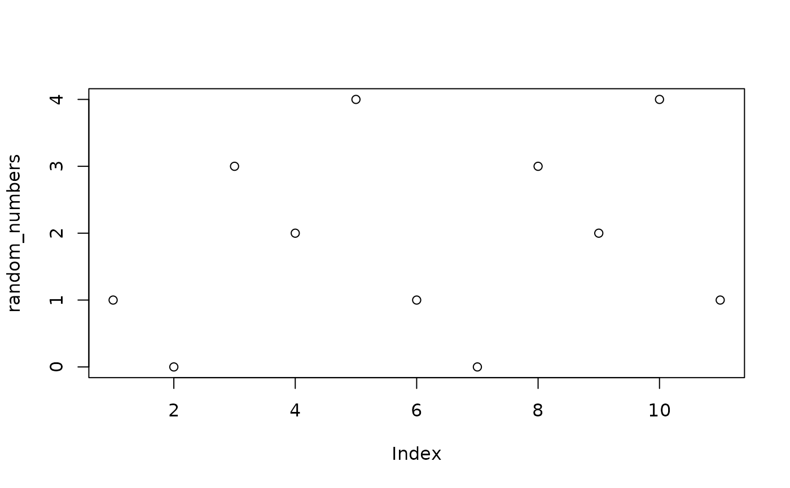

icg.RdInversive congruential generators are a type of non-linear pseudorandom number generator.They use the modular multiplicative inverse (if it exists) to generate the next number in a sequence. The standard formula for an inversive congruential generator, modulo some prime \(q\), is: $$ x_0 = \text{seed}, \quad x_{i+1} = \left\{ \begin{array}{ll} (a x_i^{-1} + c) \mod q & \text{if } x_i \neq 0, \\ c & \text{if } x_i = 0. \end{array} \right. $$ where \(x_i^{-1}\) represents the modular inverse of \(x_i\) modulo \(q\), and \(a\) and \(c\) are constants.
icg(q, a, c, seed, n)The modulus (q > 1). This determines the range of possible values in the generated sequence. The output values will be in the range [0, q-1]. A common choice is a large prime number.
The multiplier used in the modular inverse step. It must be an integer and should be chosen such that `a` and `q` are coprime (i.e., gcd(a, q) = 1) for the ICG to work correctly.
The constant added at each step of the sequence. It is used to ensure the sequence remains pseudo-random. A common choice is to set `c` to 0, but non-zero values of `c` can also be used to shift the sequence.
The initial starting value for the sequence. It must be a non-negative integer and serves as the first value from which the sequence is generated.
The number of random numbers to generate in the sequence.
For more information, please see the Wikipedia Page.
# Based off of Wikipedia's example
random_numbers <- icg(5,2,3,1,10)
# Plot numbers to see that they are random
plot(random_numbers)
